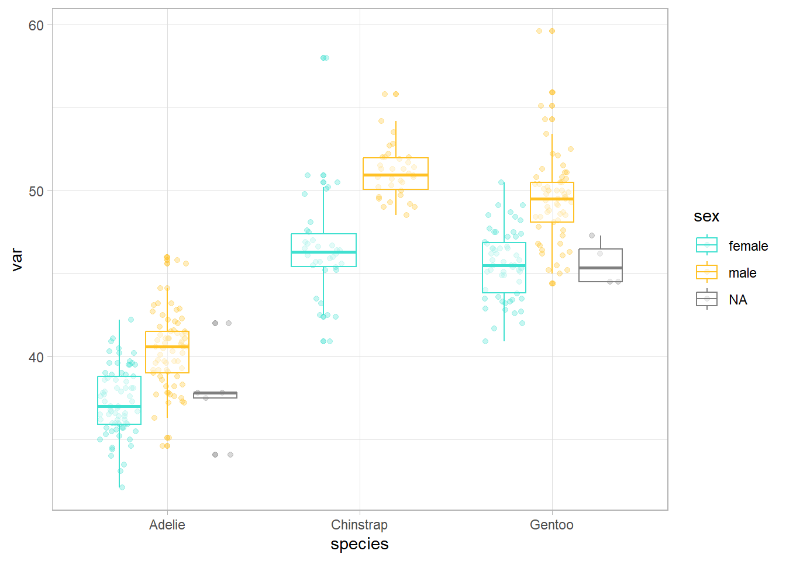

to apply functions in iterations using the library {purrr} from {tidyverse}
to learn coding styles that facilitate script understanding (üìù)
Within the model of the tools needed in a typical data science project of Wickham and Grolemund (Figure 1), this course focuses in the envelope wrapping all the other tools, that is, programming.
Figure 1: Data science model of Wickham and Grolemund. https://r4ds.hadley.nz/intro#fig-ds-diagram
1.1 Course structure
Blocks
Day
Course introduction
Refresh of tidyverse
Introduction to Functional Programming
27/05/24
Theory of functions in R
How to write functions. Arguments and return values
<list_of<
tbl_df<
a: double
b: double
c: character
>
>[2]>
[[1]]
# A tibble: 2 × 3
a b c
<dbl> <dbl> <chr>
1 1 1 hi
2 4 4 hi
[[2]]
# A tibble: 2 × 3
a b c
<dbl> <dbl> <chr>
1 2 2 hola
2 3 3 hola
mynested_tibble <- mytibble |># data.frame with list-columnsgroup_by(c) |>nest()mynested_tibble
# A tibble: 2 × 2
# Groups: c [2]
c data
<chr> <list>
1 hi <tibble [2 × 2]>
2 hola <tibble [2 × 2]>
In the example above, the length 4 numeric vector c(1, 2, 3, 4) (object) has two names: “a” and “b”.
üí°By doing mean(x = a) we link the value of ‚Äúa‚Äù with the name ‚Äúx‚Äù as well. This link is called a promise in R: it is a promise to provide the value of ‚Äúa‚Äù, if ‚Äúx‚Äù is ever needed within the sum() function.
üìùObject names should be descriptive and can not have some special characters (^, !, $, @, +, -, /, *).
üìùR is sensitive to capital letters. In general, it is better to avoid them.
Functions: objects in R that take an input and give an output doing a specific action (specific functionality). Functions are the fundamental building blocks in R which is a functional programming language.
To understand computation in R, this two truths are very useful:
- Everything that exist in R in an object.
- Everything that happen in R is the result of a function call.
Libraries or packages: hold reusable functions, documentation on how to use them and example data. They are the fundamental units of reproducible code in R.
üí°More info about Three Deep Truths About R here.
2.2 Tidyverse
Tidyverse is a collection of R packages (meta-package) initially developed by Hadley Wickham. It contains eight main packages: readr, tibble, dplyr, tidyr, stringr, forcats, ggplot2 and purrr. Tidyverse can be considered a dialect of the R programming language, and as such, it may be difficult to learn for people with experience in base R. However, it is important to know the basics of programming using Tidyverse for this course due to consistency with the sections on iteration where we will primarily use {purrr}.
Tidyverse is designed to support the activities of a human data analyst, making its programming structures more logical for the human mind. All the packages are designed to work with tidy data meaning data where each column is a variable, each row is an observation, and each cell has a value. Additionally, the functions are prepared to be concatenated using the pipe operator (%>% from {magrittr} package or |> from base R), which takes what is on its left and uses it as the first argument of the function on its right. This allows for a left-to-right reading flow, which is more comfortable for most people.
üí°The two pipe operators have small differences but in general their behaviour is the same.
myvector <-c(6, 4)mean(myvector)
[1] 5
myvector |>mean() # CTRL+SHIFT+M - shortcut for the pipe
# A tibble: 344 × 8
species island bill_length_mm bill_depth_mm flipper_length_mm body_mass_g
<fct> <fct> <dbl> <dbl> <int> <int>
1 Adelie Torgersen 39.1 18.7 181 3750
2 Adelie Torgersen 39.5 17.4 186 3800
3 Adelie Torgersen 40.3 18 195 3250
4 Adelie Torgersen NA NA NA NA
5 Adelie Torgersen 36.7 19.3 193 3450
6 Adelie Torgersen 39.3 20.6 190 3650
7 Adelie Torgersen 38.9 17.8 181 3625
8 Adelie Torgersen 39.2 19.6 195 4675
9 Adelie Torgersen 34.1 18.1 193 3475
10 Adelie Torgersen 42 20.2 190 4250
# ℹ 334 more rows
# ℹ 2 more variables: sex <fct>, year <int>
summary(penguins)
species island bill_length_mm bill_depth_mm
Adelie :152 Biscoe :168 Min. :32.10 Min. :13.10
Chinstrap: 68 Dream :124 1st Qu.:39.23 1st Qu.:15.60
Gentoo :124 Torgersen: 52 Median :44.45 Median :17.30
Mean :43.92 Mean :17.15
3rd Qu.:48.50 3rd Qu.:18.70
Max. :59.60 Max. :21.50
NA's :2 NA's :2
flipper_length_mm body_mass_g sex year
Min. :172.0 Min. :2700 female:165 Min. :2007
1st Qu.:190.0 1st Qu.:3550 male :168 1st Qu.:2007
Median :197.0 Median :4050 NA's : 11 Median :2008
Mean :200.9 Mean :4202 Mean :2008
3rd Qu.:213.0 3rd Qu.:4750 3rd Qu.:2009
Max. :231.0 Max. :6300 Max. :2009
NA's :2 NA's :2
# A tibble: 344 × 2
sex body_mass_g
<fct> <int>
1 male 6300
2 male 6050
3 male 6000
4 male 6000
5 male 5950
6 male 5950
7 male 5850
8 male 5850
9 male 5850
10 male 5800
# ℹ 334 more rows
2.2.1 Exercise
With the penguins dataset, create an object with individuals of the Adelie species and arrange the data.frame according to flipper length.
Create an object from the previous one where you select the island and the variables related to the bill.
Create an object from the one created in step 1 where you select everything except the species.
# A tibble: 344 × 9
bill_volume_mm2 species island bill_length_mm bill_depth_mm flipper_length_mm
<dbl> <fct> <fct> <dbl> <dbl> <int>
1 366. Adelie Torge… 39.1 18.7 181
2 344. Adelie Torge… 39.5 17.4 186
3 363. Adelie Torge… 40.3 18 195
4 NA Adelie Torge… NA NA NA
5 354. Adelie Torge… 36.7 19.3 193
6 405. Adelie Torge… 39.3 20.6 190
7 346. Adelie Torge… 38.9 17.8 181
8 384. Adelie Torge… 39.2 19.6 195
9 309. Adelie Torge… 34.1 18.1 193
10 424. Adelie Torge… 42 20.2 190
# ℹ 334 more rows
# ℹ 3 more variables: body_mass_g <int>, sex <fct>, year <int>
penguins |>mutate(female_penguin =case_when( sex =="female"& body_mass_g <3600~"small female", sex =="female"& body_mass_g >=3600~"big female",TRUE~NA)) |>select(female_penguin, sex, body_mass_g)
# A tibble: 344 × 3
female_penguin sex body_mass_g
<chr> <fct> <int>
1 <NA> male 3750
2 big female female 3800
3 small female female 3250
4 <NA> <NA> NA
5 small female female 3450
6 <NA> male 3650
7 big female female 3625
8 <NA> male 4675
9 <NA> <NA> 3475
10 <NA> <NA> 4250
# ℹ 334 more rows
# summarise# it is used with summary functions: n, n_distinct, mean, etc.# see ?summarisepenguins |>summarise(body_min =min(body_mass_g, na.rm =TRUE),body_max =max(body_mass_g, na.rm =TRUE) )
With the penguins dataset, count the number of cases on each island and calculate the mean flipper length for each island.
Calculate the ratio between the weight in kg and the flipper length for each individual.
2.3 Scoping
Scoping is the set of rules that govern how to look up the value of a symbol in the environment in each programming language. R uses lexical scoping and there are four basic rules: name masking, functions versus variables, a fresh start and dynamic lookup. A deeper understanding of scoping will help us to use more advanced functional programming tools.
In relation to name masking, the basic principle of lexical scoping is that names defined inside a function mask names defined outside a function.
x <-10y <-20myfunction <-function() { x <-1 y <-2 x + y}myfunction()
[1] 3
If a name isn’t defined inside a function, R will look one level up. Art by Cristina Grajera
In general, with base R, we can only call objects that are part of the environment (env-variables); however, with tidyverse, we can also call variables within tables (data-variables). This feature called data masking simplifies the code in tidyverse, but the advantage does not come for free and has implications for the grammar of the functions as we will see later.
penguins |>filter(island =="Dream", species =="Chinstrap")
Error in mean(x = values): object 'values' not found
mydata <-tibble(values =1:10)mean(x = values)
Error in mean(x = values): object 'values' not found
mean(x = mydata$values)
[1] 5.5
mydata |>summarise(mean =mean(values))
# A tibble: 1 × 1
mean
<dbl>
1 5.5
Data masking in tidyverse allows to use data-variables (toys within the box –the tibble) as if they were env-variables (toys all around the carpets). When Monchi uses the tidyglasses he could access as well to the toys within the box. Art by Cristina Grajera
3 Introduction to Functional Programming
The growing availability of data and the versatility of analysis software have led to an increase in the quantity and complexity of the analyses we conduct in biological sciences. This makes efficiency in the process of data management and analysis increasingly necessary. One possible way to optimize these processes and reduce work time for R users is function-based programming. Functions allow the automation of common tasks (for example, reading different databases), simplifying the code.
A function can be called through another function and the process can be iterated, making R a very powerful tool. Iterations are used to perform the same action on multiple inputs. There are two main paradigms of iteration: object-oriented programming (OOP) and functional programming (FP). In this workshop, we will primarily focus on functional programming and learn to use the {purrr} package, which provides functions to eliminate many common loops.
[1] 0.2545455 0.2690909 0.2981818 NA 0.1672727 0.2618182
The main advantages of functional programming (use of functions and iterations) are:
Ease of understanding the code’s intent, thereby improving comprehension for oneself, collaborators, and reviewers:
Functions have evocative names.
The code is more organized.
Speed in making changes, as functions are independent pieces that solve a specific problem.
Reduction of error probability.
3.1 When do we have to use a function?
It is recommended to follow the “do not repeat yourself” principle (DRY principle): each unit of knowledge or information should have a single, unambiguous, and authoritative representation within a system.
Writing a function is worthwhile when you have copied and pasted the same code more than twice (don’t be WET! - Write Everything Twice). The more times a piece of code is repeated in different places, the more you will need to update it if there is a change, and the higher the likelihood of errors.
4 Theory on functions in R
Functions have three components:
body(): the code inside the function.
formals(): the list of arguments that control how the function is executed.
environment(): the structure that supports the scoping of the function, i.e., the environment where the function is located.
Primitive functions are the exception as they do not have the aforementioned components. They are written in C instead of R and only appear in the base package. They are more efficient but behave differently from other functions, so the R Core Team tries not to create new primitive functions. The rest of the functions follow the structure outlined above.
sum
function (..., na.rm = FALSE) .Primitive("sum")
body(sum)
NULL
According to the type of output, there are two types of functions:
Transformation functions: transform the object that enters the function (the first argument) and return another object or the original one with modifications. Functionals are special types of transformation functions.
Side-effect functions: have side effects and perform an action, such as saving a file or drawing a plot. Some commonly used examples are: library(), setwd(), plot(), write_delim()… These functions invisibly return the output, which is not saved but can be used in a pipeline.
In general, syntactically, functions have three components:
The function function() (primitive)
Arguments: list of inputs.
Body: the piece of code that follows function(), traditionally enclosed in curly braces.
name1_v1 <-function(x, y) {paste(x, y, sep ="_")} name1_v2 <-function(x, y) paste(x, y, sep ="_") name1_v3 <- \(x, y) paste(x, y, sep ="_") name1_v1("Vero", "Cruz")
[1] "Vero_Cruz"
name1_v2("Vero", "Cruz")
[1] "Vero_Cruz"
name1_v3("Vero", "Cruz")
[1] "Vero_Cruz"
üìùIf the function has more than two lines, it is better to always use curly braces to clearly delimit it. The opening brace should never be alone, but the closing one should be (except with else). Indentation also greatly helps to understand the hierarchy of the code within functions. In this regard, we recommend using Code > Reindent lines/Reformat code in the RStudio menu.
üí°Infix operators (+), flow control operators (for, if), subsetting operators ([ ], $), assignment operators (<-) or even curly braces ({ }) are also functions. The backtick ‚Äú`‚Äù allows to refer to functions or variables that otherwise have ‚Äúillegal‚Äù names.
3+2
[1] 5
`+`(3, 2)
[1] 5
for (i in1:2) print(i)
[1] 1
[1] 2
`for`(i, 1:2, print(i))
[1] 1
[1] 2
In general, functions have a name that is executed when needed, as we have seen so far, but this is not mandatory. Some packages, such as {purrr}, or functions from the apply family, allow the use of anonymous functions for iteration.
üìùIt is better to reserve the use of anonymous functions for short and simple functions. If the function is long, spans multiple lines or we need to use it many times it is better to give it a name.
5 How to write functions
5.0.1 Exercise
Create your first function that fulfills the functionality of dividing any value by 100.
üí°Shortcut to write functions: write word ‚Äúfun‚Äù + tab.
Imagine that for a dataset we want to visualize the distribution for each numerical variable, based on other categorical variables that particularly interests us.
penguins_num <- penguins |>select(species, sex, where(is.numeric))# we are interested in differences among species and between sexes ggplot(penguins_num, aes(x = species, y = bill_length_mm, color = sex)) +geom_point(position =position_jitterdodge(), alpha =0.3) +geom_boxplot(alpha =0.5) +scale_color_manual(values =c("turquoise", "goldenrod1")) +theme_light()
ggplot(penguins_num, aes(x = species, y = bill_depth_mm, color = sex)) +geom_point(position =position_jitterdodge(), alpha =0.3) +geom_boxplot(alpha =0.5) +scale_color_manual(values =c("turquoise", "goldenrod1")) +theme_light()
ggplot(penguins_num, aes(x = species, y = flipper_length_mm, color = sex)) +geom_point(position =position_jitterdodge(), alpha =0.3) +geom_boxplot(alpha =0.5) +scale_color_manual(values =c("turquoise", "goldenrod1")) +theme_light()
# etc
We have copied a code more than twice to perform the same action (i.e., a plot to see how a variable is distributed based on two others that remain constant), so we should consider the possibility that we need a function. Next, we will follow some simple steps to transform any repeated code into a function.
Analyze the code: what are the replicated parts? How many inputs do we have? Which inputs vary and which do not?
Simplify and reanalyze duplications.
var <- penguins_num$bill_length_mmggplot(penguins_num, aes(x = species, y = var, color = sex)) +geom_point(position =position_jitterdodge(), alpha =0.3) +geom_boxplot(alpha =0.5) +scale_color_manual(values =c("turquoise", "goldenrod1")) +theme_light()

var <- body_mass_g
Error in eval(expr, envir, enclos): object 'body_mass_g' not found
var <-"body_mass_g"ggplot(penguins_num, aes(x = species, y = .data[[var]], color = sex)) +geom_point(position =position_jitterdodge(), alpha =0.3) +geom_boxplot(alpha =0.5) +scale_color_manual(values =c("turquoise", "goldenrod1")) +theme_light() +ylab(var)
üëÄ ggplot() needs arguments (data-variables) that are within the data frame it will represent. To generalize the function, we have associated the name of the variable (of type character) to the name ‚Äúvar‚Äù, but ggplot() does not accept characters. Therefore, we need to use an intermediate function that does accept them.
üìù Creating objects with intermediate calculations within a function is good practice because it makes the code clearer about what the function is doing. It is common when the function contains if/else statements.
Choose a name for the function (üìù). Ideally, it should be short and evoke what the function does. In general, it should be a verb (e.g. impute_values) and the argument names are nouns (e.g. ‚Äúdata‚Äù, ‚Äúvariable‚Äù, etc.). Using a noun for a function is allowed if the function calculates something well-known (e.g. mean()) or if it serves to access parts of an object (e.g. residuals()). It is also recommended to avoid very generic verbs (e.g. ‚Äúcalculate‚Äù), and if the name has multiple words, to separate them with an underscore, a dot or use camelCase, but be consistent. If you program several function that do similar things, it is recommended to use the same prefix for all of them (e.g. ‚Äústr_‚Äù in {stringr} package).
The more clearly you can express the intention of your code through function names, the more easily others, including yourself in the future, will be able to read and understand the code.
# examples of names to avoidT <-FALSEc <-10mean <-function(x) sum(x)rm(T, c, mean)
Enumerate the arguments within function() and put the simplified code inside the curly braces.
üìù Use comments (#) to explain the reasoning behind your functions. Avoid explaining what the function is doing or how, as the code itself already communicates that. It is also recommended to use # to separate sections (Cmd/Ctrl + Shift + R).
üí°You may want to convert these tests into formal tests. In complex functions, tests are useful to ensure that even if you make changes, the functionality has not been broken. If you‚Äôre interested, check out this link: https://r-pkgs.org/testing-basics.html
5.0.2 Exercise
Create a function to standardize (i.e., subtract the mean and divide by the standard deviation) the numerical variables of the penguins dataset.
5.1 Arguments
In general, there are two groups: those that specify the data and those that specify details of the function’s execution. Typically, those specifying data come first, followed by detail arguments. The latter group often has default values (the most common ones), for when nothing is specified.
üìù The argument names should be short and descriptive. There are some names commonly used but non descriptive that are already known to most users, and it‚Äôs fine to take advantage of them.
x, y, z: vectors
w: vector of weights
df: data frame
i, j: numerical indices, rows and columns, respectively
n: length or row numbers
p: column number
na.rm: not available values
When executing the function, arguments can be specified using the full name, a unequivocal abbreviation, or the order of their position (unnamed arguments), with this sequence (name > abbreviation > position) being the priority order when matching arguments with what is written.
üìù Generally, only positional order is used to specify the first arguments, the most common ones that everyone knows. If a default value for a detail argument is changed, it is advisable to always use the full name of the argument.
üìùUsing spaces before and after = and after , makes it much easier to identify the arguments of the function and, in general, all components.
set.seed(123)mean(rnorm(10, mean =50, sd =25) /12, trim =0.2)
There is a special argument called …, which captures any other argument that does not correspond to those named in the function. It is used to pass arguments to other functions in our function.
?plotplot(1:5, 1:5)plot(1:5, 1:5, main ="I am using an argument of title()")
üìù Using ‚Ķ make functions being very flexible, but it makes necessary to carefully read the function documentation to use it. In addition, if there is a typo in an argument name, we don‚Äôt get an error message.
sum(1, 2, 5, na.mr =TRUE)
[1] 9
sum(1, 2, NA, na.mr =TRUE)
[1] NA
5.2 Return values
The last expression executed in a function is the return value. It is the result of executing the function, unless invisible() is specified. Functions return only one object. If you want to obtain more, they must be grouped in one list.
üìù The function return() is used to explicity show what do you want to get from a function. It is recommended to use it when the return is not expected at the end of the function. For example, in the branches of an if/else structure, especially if there is a long and complex branch.
5.2.1 Exercise
How would you generalize the function explore_penguins() so you can use any data frame as input?
6 Object-oriented programming (OOP)
Most people tend to program imperatively. In imperative programming, scripts tend to be long and gradually change the state of the program. This often involves the use of temporary databases that are modified throughout the analysis process. As a result, it can be more difficult to understand what is being done in each step of the script. Object-oriented programming, used by languages, such as Java or Python, has been the most popular programming paradigm in recent decades and uses an imperative programming style.
# A tibble: 3 × 2
female_penguin body_mass_mean
<chr> <dbl>
1 big female 4338.
2 small female 3277.
3 <NA> NA
In imperative programming the most common tools to reduce duplications are for loops and while loops. loops are recommended to delve into the world of iterations because they make each iteration very explicit so it is clear what is happening.
Graphic representation of the operation of for loops where it is clearly seen that an iteration is being carried out. Illustration by Allison Horst taken from Hadley Wickham’s talk The Joy of Functional Programming (for data science).
Programming a loop needs to define three different parts: the output, the sequence and the body.
# we could generalize the for loopoutput <-vector("double", ncol(df_sam)) # 1. outputfor (i inseq_along(df_sam)) { # 2. sequence output[[i]] <-first(df_sam[[i]]) # 3. body}output
[1] 3 3 2
Output: here we determine the output space, i.e., first we have to create the “notebook” where we are going to write down all the results. This is very important for efficiency since if we increase the size of the output in each iteration with c() or another function that adds elements, the for loop will be much slower.
x <-c()system.time(for(i in1:20000) { x <-c(x, i) })
user system elapsed
0.64 0.36 1.01
y <-vector("double", length =20000)system.time(for(i inseq_along(y)) { y[i] <- i })
user system elapsed
0 0 0
Sequence: here we determine what we want to iterate on. Each execution of the for loop will assign a different value of seq_along(y) to i.
Body: Here we determine what we want each iteration to do. The action is executed repeatedly, each time with a different value for i.
There are different variations of for loops: (i) modifying an existing object instead of creating a new one; (ii) loops over names or values instead of indices; (iii) loops when we do not know the length of the output; (iv) loops when we do not know the length of the input sequence, i.e., while loops.
üëÄ Some common pitfalls when using for loops (see 5.3.1 Common pitfalls).
Despite being widely used in R, for loops are not as important as they may be in other languages because R is a functional programming language. This means that it is possible to wrap for loops in a function and call that function instead of using the loop.
There is a belief that for loops are slow, but the real disadvantage of for loops is that they are too flexible and may execute many different tasks. Instead, each functional ({purrr}, apply) is designed for a specific task, so as soon as you see it in the code, you immediately know why it’s being used. That is, the main advantage is its clarity by making the code easier to write and read (see this advanced example to understand it: https://adv-r.hadley.nz/functionals.html, 9.3 Purrr style). Once we master functional programming, we will be able to solve many iteration problems with less code, more ease, and fewer errors.
Loops can be more explicit in the sense that you see the iteration clearly, but it takes more time to understand what you are doing. On the contrary, functionals require one more step of abstraction and may require time until we understand them. The most important thing is that you solve the problem and little by little write increasingly simpler and more elegant code. See Section 12.2 for more information on object-oriented programming.
To become significantly more reliable, code must become more transparent. In particular, nested conditions and loops must be viewed with great suspicion. Complicated control flows confuse programmers. Messy code often hides bugs.
Graphical representation of the operation of map() where the focus is on the operation performed. Illustration by Allison Horst taken from Hadley Wickham’s talk The Joy of Functional Programming (for data science)
In functional programming, functions are designed to perform a single specific task and are then combined by calling these functions successively for the data set. A significant advantage of this approach is that these functions can be reused in any other project, facilitating code modularity. Furthermore, when they are well documented and easily testable, it is easy to understand and maintain the program.
R is a functional programming language so it relies primarily on a function-centric problem-solving style (https://adv-r.hadley.nz/fp.html). A functional is a function that takes a function as input and returns a vector or other type of object as output.
To program a functional, first, we solve the problem for an element. Next, we generate a function that allows us to wrap the solution in a function (as we did in Section 5). Finally, we apply the function to all the elements we are interested in. That is, we divide large problems into smaller problems and solve each task with one or more functions.
The advantage of using {purrr} instead of for loops is that it provides a function (functional) for each of the common data manipulation problems, and therefore each for loop has its own function. For example, to iterate over one argument we use the map() function and to iterate over two arguments we use the map2() function. The base R apply family solves similar problems, but {purrr} is more consistent and therefore easier to learn.
Iterating over one vector (i.e. vector of values or vector of elements in a list) is so common that the {purrr} package provides a family of functions (the map() family) for it. Remember that data frames are lists of vectors of the same length, so any calculation by rows or columns involves iterating over a vector. There is a function in {purrr} for each type of output. The suffixes indicate the type of output we want:
map() generates a list.
map_lgl() generates a logical vector.
map_int() generates a vector of integers.
map_dbl() generates a vector of decimal numbers.
map_chr() generates a character vector.
map_vec() generates a vector automatically determining the type.
output <-vector("double", 3)for (i in1:3) { output[[i]] <-first(df_sam[[i]])}output
[1] 3 3 2
Compared to a loop, the focus is on the operation being executed (first()), and not on the code needed to iterate over each element and save the output.
8 Iterations over one argument
map_*() is vectorized over one argument, e.g. (x). The function will operate on all elements of x, i.e., each value if x is a vector, each column if x is a data.frame, each group if x is a grouped data.frame, or each element if x is a list.
8.1 Our first functional: generating lists, map()
It takes a vector and a function, calls the function once for each element of the vector, and returns the results in a list. map(1:3, f) is equivalent to list(f(1), f(2), f(3)). It is the equivalent of base R’s lapply().
quadratic <-function(x) { x ^2}map(1:4, quadratic)
# A tibble: 1 × 8
species island bill_length_mm bill_depth_mm flipper_length_mm body_mass_g
<int> <int> <int> <int> <int> <int>
1 3 3 165 81 56 95
# ℹ 2 more variables: sex <int>, year <int>
8.1.1 Exercise
Generate a vector, a function and apply the function to each of the elements of the vector using map().
As said before, it is possible to wrap for loops in a function and call that function instead of using the loop.
imple_map <-function(x, f, ...) { out <-vector("list", length(x))for (i inseq_along(x)) { out[[i]] <-f(x[[i]], ...) } out}imple_map(1:4, quadratic)
[[1]]
[1] 1
[[2]]
[1] 4
[[3]]
[1] 9
[[4]]
[1] 16
üí°Comparing {purrr} functions with wrapping a for loop on your own, {purrr} functions are written in C to maximize performance, preserve names, and support some shortcuts (e.g. \(x)).
8.1.2 Exercise
Now that you have understood the logic of map(), spot the differences between the following three lines of code. What does the map() functional do? What differences do you detect in the code? And at the output?
map(penguins, \(x) mean(x))
Warning in mean.default(x): argument is not numeric or logical: returning NA
Warning in mean.default(x): argument is not numeric or logical: returning NA
Warning in mean.default(x): argument is not numeric or logical: returning NA
$species
[1] NA
$island
[1] NA
$bill_length_mm
[1] NA
$bill_depth_mm
[1] NA
$flipper_length_mm
[1] NA
$body_mass_g
[1] NA
$sex
[1] NA
$year
[1] 2008.029
map(penguins, \(x) mean(x, na.rm = T)) # option 1
Warning in mean.default(x, na.rm = T): argument is not numeric or logical:
returning NA
Warning in mean.default(x, na.rm = T): argument is not numeric or logical:
returning NA
Warning in mean.default(x, na.rm = T): argument is not numeric or logical:
returning NA
$species
[1] NA
$island
[1] NA
$bill_length_mm
[1] 43.92193
$bill_depth_mm
[1] 17.15117
$flipper_length_mm
[1] 200.9152
$body_mass_g
[1] 4201.754
$sex
[1] NA
$year
[1] 2008.029
map(penguins, mean, na.rm = T) # option 2
Warning in mean.default(.x[[i]], ...): argument is not numeric or logical:
returning NA
Warning in mean.default(.x[[i]], ...): argument is not numeric or logical:
returning NA
Warning in mean.default(.x[[i]], ...): argument is not numeric or logical:
returning NA
$species
[1] NA
$island
[1] NA
$bill_length_mm
[1] 43.92193
$bill_depth_mm
[1] 17.15117
$flipper_length_mm
[1] 200.9152
$body_mass_g
[1] 4201.754
$sex
[1] NA
$year
[1] 2008.029
# map vs anonymous functionx <-c(0, 0)set.seed(123)map_dbl(x, sum, rnorm(1))
[1] -0.5604756 -0.5604756
set.seed(123)map_dbl(x, \(x) sum(x, rnorm(1)))
[1] -0.5604756 -0.2301775
As we have seen in the previous exercise, if we wanted to pass additional arguments to the function we are using within map(), one option would be through an anonymous function (see option 1 of the previous exercise). However, since map() includes ... among its arguments, we can also include the additional arguments after the function inside map() in a much simpler way (see option 2 of the previous exercise).
8.2 Our second functional: generating vectors, map_*()
8.2.1 Exercise
Take a couple of minutes to understand what the following functions do:
map_lgl(penguins, is.numeric)
species island bill_length_mm bill_depth_mm
FALSE FALSE TRUE TRUE
flipper_length_mm body_mass_g sex year
TRUE TRUE FALSE TRUE
bill_length_mm bill_depth_mm flipper_length_mm body_mass_g
44.45 17.30 197.00 4050.00
year
2008.00
map_chr(penguins, class)
species island bill_length_mm bill_depth_mm
"factor" "factor" "numeric" "numeric"
flipper_length_mm body_mass_g sex year
"integer" "integer" "factor" "integer"
map_int(penguins, \(x) length(unique(x)))
species island bill_length_mm bill_depth_mm
3 3 165 81
flipper_length_mm body_mass_g sex year
56 95 3 3
Arguments that vary for each run are written before the function, and arguments that are the same for each run are written after the function (e.g. na.rm = T).
Base R has two functions from the apply() family that can return vectors: sapply() and vapply(). We recommend avoiding sapply() because it tries to simplify the result and chooses a default output format, potentially returning a list, a vector or a matrix. vapply() is safer because it allows you to indicate the output format with FUN.VALUE. The main disadvantage of vapply() is that we need to specify more arguments than in map_*().
bill_length_mm bill_depth_mm flipper_length_mm body_mass_g
44.45 17.30 197.00 4050.00
year
2008.00
map_dbl(penguins_num, median, na.rm = T)
bill_length_mm bill_depth_mm flipper_length_mm body_mass_g
44.45 17.30 197.00 4050.00
year
2008.00
Working with lists is very common in R. In fact the default output of map() is lists. However, lists can sometimes be messy, e.g., when we lose the name of each element in the list. The function nest() of {tidyr} allows us to work with list-columns in data frames, generating a row for each group defined by the non-nested columns.
⚡¡Important! The first iteration corresponds to the first value of the vector x and the first value of the vector y. The second iteration corresponds to the second value of the vector x and the second value of the vector y. Not all possible combinations are made between both vectors.
imple_map2 <-function(x, y, f, ...) { out <-vector("list", length(x))for (i inseq_along(x)) { out[[i]] <-f(x[[i]], y[[i]], ...) } out}imple_map2(x, y, power)
üí°If we do not name the list elements, pmap() will use the list elements in their order for consecutive arguments to the function. In any case, it is a good practice to name them so that it is very clear what the function will do.
args3 <-list(mean = x, sd = y, n = z) args3 |>pmap(rnorm)
Transform the map2() that you have generated in the exercise Section 9.1.1 to pmap().
10 Iterations without output
10.1 Our fifth functional: walk(), walk2() and pwalk()
Walk family functionals are used when we want to use functions for their side effects (e.g. ggsave()) and not for their return value. What is important is the action and not the return value or object in R.
10.1.1 Exercise
Based on what it says in the definition about the walk() family, run this code and understand what it does.
Generate an example where you use walk2() or pwalk() to save multiple plots generated with ggplot(). Hint: the first entry will be the plot you want to save and the second the name of the file you want to give it.
11 Function operators and other functionals
11.1 More variants of map(): modify() and imap()
modify() and imap() are also map family functions. modify() is analogous to map() but returns the same output type as the input type.
imap() is used to iterate over indexes, both numeric indexes and names. imap(x, f) is analogous to map2(x, names(x), f) when x has names and map2(x, seq_along(x), f) when it does not.
$species
[1] "The column species has 3 unique values counting NA's"
$island
[1] "The column island has 3 unique values counting NA's"
$bill_length_mm
[1] "The column bill_length_mm has 165 unique values counting NA's"
$bill_depth_mm
[1] "The column bill_depth_mm has 81 unique values counting NA's"
$flipper_length_mm
[1] "The column flipper_length_mm has 56 unique values counting NA's"
$body_mass_g
[1] "The column body_mass_g has 95 unique values counting NA's"
$sex
[1] "The column sex has 3 unique values counting NA's"
$year
[1] "The column year has 3 unique values counting NA's"
$species
[1] "The column species has 3 unique values counting NA's"
$island
[1] "The column island has 3 unique values counting NA's"
$bill_length_mm
[1] "The column bill_length_mm has 165 unique values counting NA's"
$bill_depth_mm
[1] "The column bill_depth_mm has 81 unique values counting NA's"
$flipper_length_mm
[1] "The column flipper_length_mm has 56 unique values counting NA's"
$body_mass_g
[1] "The column body_mass_g has 95 unique values counting NA's"
$sex
[1] "The column sex has 3 unique values counting NA's"
$year
[1] "The column year has 3 unique values counting NA's"
[[1]]
[1] "The column 1 has 5 unique values counting NA's"
[[2]]
[1] "The column 2 has 5 unique values counting NA's"
[[3]]
[1] "The column 3 has 5 unique values counting NA's"
In this course we do not delve into modify() and imap() because with the other functionals we have seen we can address practically all iteration problems. However, if anyone is interested you can check out https://adv-r.hadley.nz/functionals.html, 9.4 Map variants.
Predicates are functions that return a single TRUE or FALSE (e.g., is.character()). Thus, a functional predicate applies a predicate to each element of a vector: keep(), discard(), some(), every(), detect(), detect_index() … For more information see: https://r4ds.had.co.nz/iteration.html, 21.9.1 Predicate functions.
# A tibble: 344 × 3
species island sex
<fct> <fct> <fct>
1 Adelie Torgersen male
2 Adelie Torgersen female
3 Adelie Torgersen female
4 Adelie Torgersen <NA>
5 Adelie Torgersen female
6 Adelie Torgersen male
7 Adelie Torgersen female
8 Adelie Torgersen male
9 Adelie Torgersen <NA>
10 Adelie Torgersen <NA>
# ℹ 334 more rows
penguins |>every(is.numeric)
[1] FALSE
dplyr::across() is similar to map() but instead of doing something with each element of a vector, data frame or list, it does something only with each column in a data frame.
reduce() is a useful way to generalize a function that works with two inputs (binary function) to work with any number of inputs.
# A tibble: 3 × 4
name age sex height
<chr> <dbl> <chr> <chr>
1 Vero 100 F 180
2 Julen 140 M 150
3 Monchi 200 M 500
11.2.1 Function operators
When we use map() functions to repeat many operations, the probability that one of those operations fails increases and we will not get any output. {purrr} provides some function operators in the form of adverbs to ensure that an error doesn’t ruin the entire process: safely(), possibly(), quietly(). For more information see: https://r4ds.had.co.nz/iteration.html, 21.6 Dealing with failure.
x <-list(10, "b", 3)x |>map(log)
Error in `map()`:
ℹ In index: 2.
Caused by error:
! non-numeric argument to mathematical function
[[1]]
[1] 2.302585
[[2]]
[1] NA
[[3]]
[1] 1.098612
11.2.2 Exercise
Use any variant of map() along with a function operator to the penguins database.
12 Further information
12.1 Parallelization
Different CPU cores (Central Processing Unit) can be used to run the same process with different sets of data in parallel, speeding up long tasks. Some tasks are particularly well suited for parallelization, such as, those that are repetitive and have little or no dependence on each other, other than the source of the input data, allowing them to be easily split into parallel tasks. These tasks are usually those that can be solved through iterations like those we have seen previously. In theory, the process speeds up in proportion to the number of cores, but in practice, other factors must be taken into account, such as, the time consumed in transferring data to each process and the time spent gathering the results of the different processes.
R was originally designed to run on a single CPU process because when it was developed, CPUs generally had a single core and parallel computing was not as common or developed as it is today. Therefore, to take advantage of parallelization in R, we need to resort to additional packages. However, it is important to note that these packages may be limited in their use to specific cases and data types.
library(parallel) # detect number of coreslibrary(future) # set number of coreslibrary(furrr) # parallelization with mapdetectCores()# function to cube a numbercube <-function(x) {Sys.sleep(1) # simulation of a computationally intensive taskreturn(x ^3)}# sequentialtime_initial <-Sys.time()output <-map(1:10, cube)time_final <-Sys.time()cat("Computing time:", round(time_final - time_initial, 1), "seconds")# establish how we are going to resolve the process# here we will use 3 cores but depending on the number of cores available on your computer it can be modifiedplan(multisession, workers =3)# future_map to run in paralleltime_initial <-Sys.time()output <-future_map(1:10, cube)time_final <-Sys.time()cat("Computing time:", round(time_final - time_initial, 1), "seconds\n")# we see that the computing time has been reduced by almost 1/3 (approx. 1/number of cores)
12.2 More information about Object-Oriented Programming (OOP)
- Everything that exists is an object.
— John Chambers
- However, not everything is object-oriented
In R, functional programming is often more relevant than OOP, as complex problems are often addressed by decomposing them into simple functions rather than simple objects.
The main reason for using OOP is polymorphism (from the Latin “many forms”). Polymorphism allows a developer to consider a function’s interface separately from its implementation, making it easier to use the same function with different input types. To understand this, try running the following code:
summary(penguins$bill_depth_mm)
Min. 1st Qu. Median Mean 3rd Qu. Max. NA's
13.10 15.60 17.30 17.15 18.70 21.50 2
summary(penguins$sex)
female male NA's
165 168 11
You might think that summary() uses a series of if-else statements depending on the type of the input data, but in this case only the original author could add new implementations. However, an OOP system allows any developer to extend the interface by creating implementations for new input types.
In OOP systems, the type of an object is called its class, and a specific implementation for a class is known as a method. Broadly speaking, a class defines the characteristics of an object (what is it?) and methods describe the actions that object can perform (what does it do?).
Base R provides three OOP systems (S3 –which is the most used-, S4 and RC), although there are also other OOP systems provided by different CRAN packages.
library(sloop)
Warning: package 'sloop' was built under R version 4.2.3
is.object(1:5) # base object but not object oriented
[1] FALSE
otype(1:5) # base object
[1] "base"
attr(1:5, "class") # without class
NULL
is.object(penguins) # object-oriented
[1] TRUE
otype(penguins) # S3
[1] "S3"
attr(penguins, "class") # with clase
[1] "tbl_df" "tbl" "data.frame"
ftype(summary) # generic function S3
[1] "S3" "generic"
# a generic function defines the interface, which uses a different implementation (method) depending on the class of the argument. Remember the idea of polymorphism that we have seen before ;)
This course is primarily based on the first edition of the book R for Data Science by Hadley Wickham & Garrett Grolemund and the second edition of the book Advanced R by Hadley Wickham.